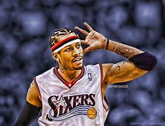

Allen Iverson
| 綽號 | 答案、戰神 |
|---|---|
| 國籍 | 美國 |
| 位置 | 得分後衛/控球後衛 |
| 出生 | 1975年6月7日 |
| 身高 | 183cm |
| 體重 | 75kg |
NBA最有價值球員（2001）
11×NBA全明星賽（2000－2010）
2×NBA全明星賽MVP（2001、2005)
3×NBA年度第一隊（1999、2001、2005）
3×NBA年度第二隊（2000、2002、2003）
NBA年度第三隊（2006）
NBA年度最佳新秀（1997）
NBA新秀挑戰賽MVP（1997）
4×NBA得分王（1999、2001、2002、2005）
3×NBA抄截王（2001－2003）
NBA75大球星（2021）
3號球衣為費城七六人所退休
NCAA全美共識第一隊（1996）
大東區錦標賽最佳陣容第一隊（1996）
早年成長過程
艾佛森出生在弗吉尼亞州的漢普頓，母親安·艾佛森是一個年僅15歲的單親媽媽，在他的父親艾倫·布勞頓離開她之後給與了艾倫母親的娘家姓。
他成長在漢普頓充斥著毒品與犯罪的地區。在童年時期，鄰居的孩子們都喜歡他，並賦予了艾佛森「Bubba Chuck」的綽號。童年時代的朋友Jaime Rogers說，艾佛森總是會關注年幼的孩子，「他總是帶著大家。」在他13歲的時候，他的父親Michael Freeman在他面前因持有毒品而被捕。艾佛森因為曠課而沒有完成八年級的學業，並且離開了該地區。
入獄
1993年2月14日，艾佛森和他的幾個朋友在弗吉尼亞州漢普頓的一個保齡球館與其他幾位顧客發生爭執。據稱，艾佛森的人群很吵鬧，不得不被要求安靜下來幾次，最後，另一群年輕人開始大喊大叫。不久之後，爆發了一場白人與黑人之間的鬥毆。據稱，在戰鬥中，艾佛森用一把椅子擊中了一名女子。他和他的三個同樣是黑人的朋友是唯一被捕的人。當時年僅17歲的艾佛森被判處暴徒的重傷害罪，這個判決在維吉尼亞州過去很少使用，因目的在於打擊私刑。維吉尼亞地區的許多人認為這一事件是種族歧視的結果，因據說他們是與Poquoson高中白人學生發生爭吵，該校學生以「不喜歡黑人」著稱。法庭最初表示艾佛森傷害了三個人，這通常是60年徒刑。最後艾佛森被判處了15年監禁，緩刑10年。在艾佛森在紐波特紐斯市的紐波特紐斯城農場監獄（Newport News City Farm）度過了四個月之後，弗吉尼亞州州長道格拉斯·懷爾德（Douglas Wilder）給予了赦免，弗吉尼亞州上訴法院最終因證據不足而推翻了1995年的定罪。